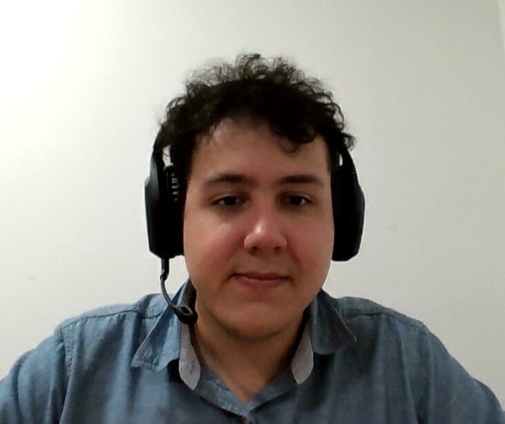

Fabrizio Caballero | WDD 130
Hello, my name is Fabrizio Caballero. I am from Asunción, Paraguay. I am happily married with two wonderful kids. I am passionate about transforming user-centric designs into intuitive platforms.
Hello, my name is Fabrizio Caballero. I am from Asunción, Paraguay. I am happily married with two wonderful kids. I am passionate about transforming user-centric designs into intuitive platforms.